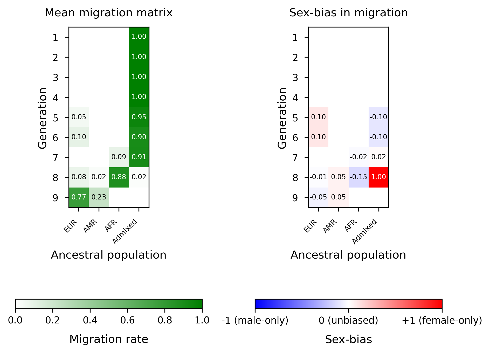
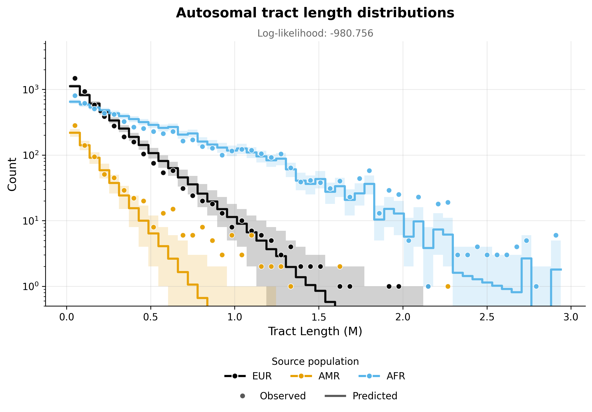
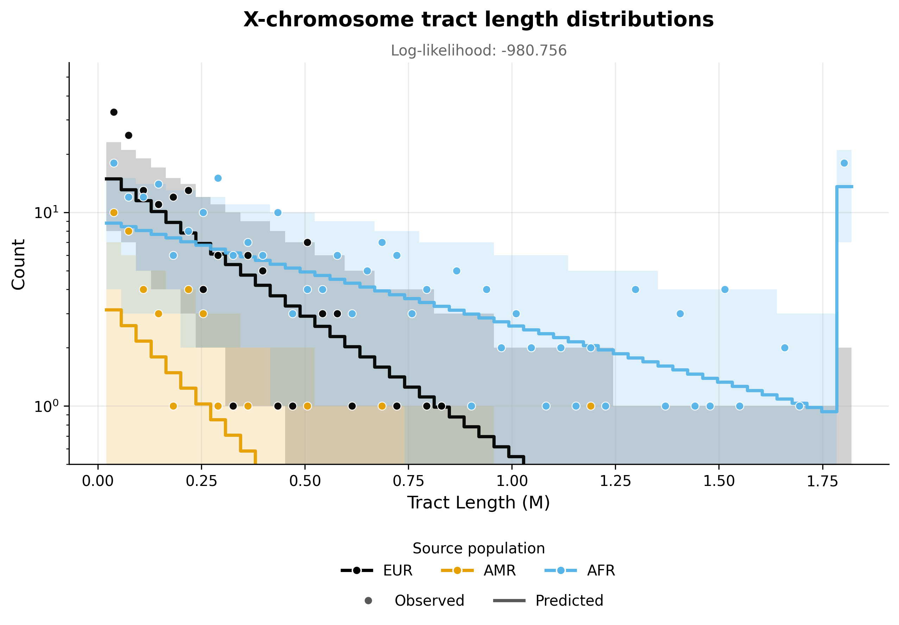

Note
Go to the end to download the full example code.
ASW inference - Three pulses model#
This example implements inference for the ASW population under a three pulses model of admixture, using the tracts package. Inference is performed using autosomal and X chromosome data, allowing for the specification of sex-biased admixture.
To implement this example, we use the following driver file:
samples:
directory: ../ASW_TrioPhased
individual_names: [
"NA19625","NA19700","NA19701","NA19703","NA19704","NA19707","NA19711","NA19712","NA19713","NA19818","NA19819",
"NA19834","NA19835","NA19900","NA19901","NA19904","NA19908","NA19909","NA19913","NA19914","NA19916","NA19917",
"NA19920","NA19921","NA19922","NA19923","NA19982","NA19984","NA20126","NA20127","NA20274","NA20276","NA20278",
"NA20281","NA20282","NA20287","NA20289","NA20291","NA20294","NA20296","NA20298","NA20299","NA20314","NA20317",
"NA20318","NA20320","NA20321","NA20332","NA20334","NA20339","NA20340","NA20342","NA20346","NA20348","NA20351",
"NA20355","NA20356","NA20357","NA20359","NA20362","NA20412"]
male_names : [
"NA19700","NA19703","NA19711","NA19818","NA19834","NA19900","NA19904","NA19908","NA19916","NA19920",
"NA19922","NA19982","NA19984","NA20126","NA20278","NA20281","NA20291","NA20298","NA20318","NA20340",
"NA20342","NA20346","NA20348","NA20351","NA20356","NA20362"] #see Readme_dataprocessing.md for how this was generated
filename_format: "{name}_{label}_final.bed"
labels: [A, B] #If this field is omitted, 'A' and 'B' will be used by default
chromosomes: 1-22 #The chromosomes to use for analysis. Can be specified as a list or a range
allosomes: [X]
models:
model_filename: ../models/ppx_xxp_pxx.yaml
ad_model_autosomes: M
ad_model_allosomes: DC
start_params:
t1: 9.65:10.25
REUR: 0.78:0.82
RAFR: 0.87:0.91
REUR2: 0.18:0.22
t2: 6.60:7.20
t3: 3.18:3.78
REUR_sex_bias: 0.00:0.04
REUR2_sex_bias: 0.12:0.16
RAFR_sex_bias: 0.07:0.11
optim:
repetitions: 3
seed: 100
maximum_iterations: 1000
npts: 50
exclude_tracts_below_cm: 2
unknown_labels_for_smoothing: ["UNK", "centromere","miscall"] # segments with these labels will be smoother over, that is, will be filled with neighbouring ancestries up to their midpoints.
n_reoptimizations: 5
rerun_optimization_on_boundaries: False
output:
output_directory: ./output_three_pulses/
log_filename: 'ASW_three_pulses.log'
verbose_log: 1
verbose_screen: 30
log_scale: True
Complete results from this analysis are saved in the output directory specified in the driver file. Below, we display the optimal parameters estimated from this analysis, as well as the plots illustrating the inferred tract length distributions, compared to the observed histograms, for every source population and chromosome type (autosomes and X chromosome).
Optimal parameters#
parameter |
value |
|---|---|
REUR |
0.7746207735071465 |
REUR_sex_bias |
-0.04960518486225096 |
t1 |
8.895471171352371 |
RAFR |
0.8887851395038565 |
RAFR_sex_bias |
-0.1491739622466438 |
t2 |
7.895292891271262 |
REUR2 |
0.1467346370730849 |
REUR2_sex_bias |
0.09532146818377196 |
t3 |
5.655838938092549 |
targetpop_AMR_rate |
0.22537922649285347 |
targetpop_AMR_sex_bias |
0.049605184862251184 |
likelihood -980.756 |
Optimal migration matrices#
{kind=link}

Tract length histograms#
Autosomal admixture#
{kind=link}

X chromosome admixture#
{kind=link}

------------------------------------------------------------------------------------------------
Running tracts 2.0 with driver file: /home/runner/work/tracts/tracts/example/documentation_examples/ASW/ASW_three_pulses.yaml
------------------------------------------------------------------------------------------------
Results will be written to: output_three_pulses.
Using log file: output_three_pulses/ASW_three_pulses.log.
excluding_tracts_below set to 2.0 cM.
Re-optimization will be performed until convergence or maximum 5 times.
Ancestries: EUR, AMR, AFR
Data autosome proportions: [0.19578862 0.03825495 0.76595643]
Data allosome proportions: [0.16839124 0.03818939 0.79341937]
Model parameters and bounds:
--------------------------------------------
Parameter | Lower bound | Upper bound
--------------------------------------------
REUR | 1e-09 | 1
REUR_sex_bias | -1 | 1
t1 | 1 | inf
RAFR | 1e-09 | 1
RAFR_sex_bias | -1 | 1
t2 | 1 | inf
REUR2 | 1e-09 | 1
REUR2_sex_bias | -1 | 1
t3 | 1 | inf
--------------------------------------------
Multiple starting parameters will be generated and used for multiple optimization runs.
-----------------------------------------------------------------------------------------------------
Step 1 : Optimizing autosomal likelihood over parameters ['REUR', 't1', 'RAFR', 't2', 'REUR2', 't3'].
-----------------------------------------------------------------------------------------------------
Starting parameters for step 1 optimization
---------------------------------------------------------------------------------------------
Run | REUR | t1 | RAFR | t2 | REUR2 | t3
---------------------------------------------------------------------------------------------
1 | 0.8134 | 9.823 | 0.8717 | 6.958 | 0.2116 | 3.593
2 | 0.7876 | 9.821 | 0.8952 | 6.96 | 0.2014 | 3.481
3 | 0.8108 | 10.25 | 0.9091 | 6.793 | 0.2145 | 3.595
---------------------------------------------------------------------------------------------
Optimization run #1
Iter. Log-likelihood Model parameters Transmission
-------------------------------------------------------------
30 , -933.463 , array([ 0.80861 , 0 , 9.57567 , 0.866292 , 0 , 7.72335 , 0.198146 , 0 , 3.79732 ]), Autosomes
60 , -779.987 , array([ 0.799832 , 0 , 8.9677 , 0.862766 , 0 , 7.86731 , 0.163378 , 0 , 4.172 ]), Autosomes
90 , -754.075 , array([ 0.799554 , 0 , 8.86422 , 0.862304 , 0 , 7.79487 , 0.158522 , 0 , 4.26852 ]), Autosomes
120 , -741.186 , array([ 0.798853 , 0 , 8.85619 , 0.86245 , 0 , 7.83376 , 0.155355 , 0 , 4.34124 ]), Autosomes
150 , -736.053 , array([ 0.798695 , 0 , 8.8522 , 0.862357 , 0 , 7.83608 , 0.153859 , 0 , 4.36312 ]), Autosomes
180 , -729.709 , array([ 0.798413 , 0 , 8.85124 , 0.862454 , 0 , 7.84465 , 0.152054 , 0 , 4.39498 ]), Autosomes
210 , -743.191 , array([ 0.798235 , 0 , 8.85177 , 0.862551 , 0 , 7.84774 , 0.151568 , 0 , 4.4021 ]), Autosomes
240 , -727.041 , array([ 0.798215 , 0 , 8.85281 , 0.862629 , 0 , 7.84765 , 0.15126 , 0 , 4.40557 ]), Autosomes
270 , -725.335 , array([ 0.798052 , 0 , 8.85322 , 0.862674 , 0 , 7.84974 , 0.150749 , 0 , 4.41246 ]), Autosomes
300 , -739.728 , array([ 0.798001 , 0 , 8.85248 , 0.862668 , 0 , 7.85213 , 0.15053 , 0 , 4.4151 ]), Autosomes
320 , -724.354 , array([ 0.797969 , 0 , 8.85305 , 0.862695 , 0 , 7.85274 , 0.150454 , 0 , 4.41649 ]), Autosomes
Optimization completed.
-----------------------
Optimization run #2
Iter. Log-likelihood Model parameters Transmission
-------------------------------------------------------------
30 , -967.579 , array([ 0.783935 , 0 , 9.61598 , 0.887778 , 0 , 7.65685 , 0.196863 , 0 , 3.88934 ]), Autosomes
60 , 8.88232e+29 , array([ 0.779609 , 0 , 9.36916 , 0.880349 , 0 , 8.08261 , 0.175867 , 0 , 4.56606 ]), OOB (oob=-0.008882319142410111)
90 , -782.774 , array([ 0.779552 , 0 , 9.3137 , 0.879938 , 0 , 8.06068 , 0.175369 , 0 , 4.54399 ]), Autosomes
116 , -782.493 , array([ 0.77952 , 0 , 9.31411 , 0.879938 , 0 , 8.06144 , 0.175305 , 0 , 4.54498 ]), Autosomes
Optimization completed.
-----------------------
Optimization run #3
Iter. Log-likelihood Model parameters Transmission
-------------------------------------------------------------
30 , -1082.08 , array([ 0.805637 , 0 , 10.2417 , 0.901986 , 0 , 7.13088 , 0.208554 , 0 , 4.15649 ]), Autosomes
60 , -877.956 , array([ 0.796973 , 0 , 10.0229 , 0.895134 , 0 , 7.62327 , 0.192105 , 0 , 4.79459 ]), Autosomes
90 , -743.156 , array([ 0.781623 , 0 , 9.14076 , 0.890051 , 0 , 7.78665 , 0.163381 , 0 , 5.16625 ]), Autosomes
120 , -691.997 , array([ 0.778339 , 0 , 8.89265 , 0.890374 , 0 , 7.88263 , 0.149933 , 0 , 5.31567 ]), Autosomes
150 , -689.192 , array([ 0.777918 , 0 , 8.88853 , 0.890213 , 0 , 7.88627 , 0.149407 , 0 , 5.34284 ]), Autosomes
180 , -687.912 , array([ 0.777708 , 0 , 8.88828 , 0.890112 , 0 , 7.88604 , 0.149167 , 0 , 5.35533 ]), Autosomes
210 , -686.239 , array([ 0.777401 , 0 , 8.88793 , 0.889974 , 0 , 7.88511 , 0.14882 , 0 , 5.37077 ]), Autosomes
240 , -685.082 , array([ 0.777198 , 0 , 8.88748 , 0.889878 , 0 , 7.88546 , 0.148553 , 0 , 5.38105 ]), Autosomes
246 , -685.08 , array([ 0.777208 , 0 , 8.88745 , 0.889874 , 0 , 7.88588 , 0.148546 , 0 , 5.38087 ]), Autosomes
Optimization completed.
-----------------------
In Step 1: Results from multiple optimization runs with different starting parameters:
-------------------------------------------------------------------------------------------------------------------------------------------------------------
Run | LogLik | REUR | REUR_sex_bias | t1 | RAFR | RAFR_sex_bias | t2 | REUR2 | REUR2_sex_bias | t3
-------------------------------------------------------------------------------------------------------------------------------------------------------------
1 | -724.354 | 0.798 | 0 | 8.853 | 0.8627 | 0 | 7.853 | 0.1505 | 0 | 4.416
2 | -782.493 | 0.7795 | 0 | 9.314 | 0.8799 | 0 | 8.061 | 0.1753 | 0 | 4.545
3 | -685.08 | 0.7772 | 0 | 8.887 | 0.8899 | 0 | 7.886 | 0.1485 | 0 | 5.381
-------------------------------------------------------------------------------------------------------------------------------------------------------------
Selecting best parameters from step 1 and proceeding to step 2 optimization.
----------------------------------------------------------------------------------------------------------------
Step 2 : Optimizing allosomal likelihood over parameters : ['REUR_sex_bias', 'RAFR_sex_bias', 'REUR2_sex_bias'].
----------------------------------------------------------------------------------------------------------------
Starting parameters for step 2 optimization (non-sex-bias parameters are fixed to the best step 1 estimates).
----------------------------------------------------------------------------------------------------------------------------------------------
Run | REUR | REUR_sex_bias | t1 | RAFR | RAFR_sex_bias | t2 | REUR2 | REUR2_sex_bias | t3
----------------------------------------------------------------------------------------------------------------------------------------------
1 | 0.7772 | 0.01559 | 8.887 | 0.8899 | 0.0733 | 7.886 | 0.1485 | 0.1206 | 5.381
2 | 0.7772 | 0.01136 | 8.887 | 0.8899 | 0.07002 | 7.886 | 0.1485 | 0.1491 | 5.381
3 | 0.7772 | 0.01685 | 8.887 | 0.8899 | 0.07184 | 7.886 | 0.1485 | 0.1553 | 5.381
----------------------------------------------------------------------------------------------------------------------------------------------
Optimization run #1
Iter. Log-likelihood Model parameters Transmission
-------------------------------------------------------------
30 , -215.792 , array([ 0.777208 , -0.0212349 , 8.88745 , 0.889874 , -0.0487424 , 7.88588 , 0.148546 , 0.108105 , 5.38087 ]), Female allosomes
30 , -96.3044 , array([ 0.777208 , -0.0212349 , 8.88745 , 0.889874 , -0.0487424 , 7.88588 , 0.148546 , 0.108105 , 5.38087 ]), Male allosomes
60 , 3.13032e+26 , array([ 0.777208 , -0.0300062 , 8.88745 , 0.889874 , -0.0828898 , 7.88588 , 0.148546 , 0.103166 , 5.38087 ]), OOB (oob=-3.13031528964558e-06)
63 , -215.067 , array([ 0.777208 , -0.0299651 , 8.88745 , 0.889874 , -0.0828176 , 7.88588 , 0.148546 , 0.103141 , 5.38087 ]), Female allosomes
63 , -96.3647 , array([ 0.777208 , -0.0299651 , 8.88745 , 0.889874 , -0.0828176 , 7.88588 , 0.148546 , 0.103141 , 5.38087 ]), Male allosomes
Optimization completed.
-----------------------
Optimization run #2
Iter. Log-likelihood Model parameters Transmission
-------------------------------------------------------------
30 , -215.687 , array([ 0.777208 , -0.0288642 , 8.88745 , 0.889874 , -0.0505631 , 7.88588 , 0.148546 , 0.137982 , 5.38087 ]), Female allosomes
30 , -96.3837 , array([ 0.777208 , -0.0288642 , 8.88745 , 0.889874 , -0.0505631 , 7.88588 , 0.148546 , 0.137982 , 5.38087 ]), Male allosomes
60 , 1.4399e+27 , array([ 0.777208 , -0.0387857 , 8.88745 , 0.889874 , -0.0829828 , 7.88588 , 0.148546 , 0.130357 , 5.38087 ]), OOB (oob=-1.4398965938688946e-05)
65 , -215.003 , array([ 0.777208 , -0.0387156 , 8.88745 , 0.889874 , -0.0828391 , 7.88588 , 0.148546 , 0.130348 , 5.38087 ]), Female allosomes
65 , -96.4342 , array([ 0.777208 , -0.0387156 , 8.88745 , 0.889874 , -0.0828391 , 7.88588 , 0.148546 , 0.130348 , 5.38087 ]), Male allosomes
Optimization completed.
-----------------------
Optimization run #3
Iter. Log-likelihood Model parameters Transmission
-------------------------------------------------------------
30 , -215.728 , array([ 0.777208 , -0.0191318 , 8.88745 , 0.889874 , -0.0507532 , 7.88588 , 0.148546 , 0.142981 , 5.38087 ]), Female allosomes
30 , -96.395 , array([ 0.777208 , -0.0191318 , 8.88745 , 0.889874 , -0.0507532 , 7.88588 , 0.148546 , 0.142981 , 5.38087 ]), Male allosomes
60 , -215.06 , array([ 0.777208 , -0.025298 , 8.88745 , 0.889874 , -0.0827923 , 7.88588 , 0.148546 , 0.138909 , 5.38087 ]), Female allosomes
60 , -96.4534 , array([ 0.777208 , -0.025298 , 8.88745 , 0.889874 , -0.0827923 , 7.88588 , 0.148546 , 0.138909 , 5.38087 ]), Male allosomes
62 , -215.059 , array([ 0.777208 , -0.025289 , 8.88745 , 0.889874 , -0.0828447 , 7.88588 , 0.148546 , 0.138893 , 5.38087 ]), Female allosomes
62 , -96.4535 , array([ 0.777208 , -0.025289 , 8.88745 , 0.889874 , -0.0828447 , 7.88588 , 0.148546 , 0.138893 , 5.38087 ]), Male allosomes
Optimization completed.
-----------------------
In Step 2: Results from multiple optimization runs with different starting parameters:
-------------------------------------------------------------------------------------------------------------------------------------------------------------
Run | LogLik | REUR | REUR_sex_bias | t1 | RAFR | RAFR_sex_bias | t2 | REUR2 | REUR2_sex_bias | t3
-------------------------------------------------------------------------------------------------------------------------------------------------------------
1 | -311.432 | 0.7772 | -0.02997 | 8.887 | 0.8899 | -0.08282 | 7.886 | 0.1485 | 0.1031 | 5.381
2 | -311.437 | 0.7772 | -0.03872 | 8.887 | 0.8899 | -0.08284 | 7.886 | 0.1485 | 0.1303 | 5.381
3 | -311.513 | 0.7772 | -0.02529 | 8.887 | 0.8899 | -0.08284 | 7.886 | 0.1485 | 0.1389 | 5.381
-------------------------------------------------------------------------------------------------------------------------------------------------------------
Selecting best parameters from step 2.
Step 2 used allosomal data only. Final likelihood is evaluated on autosomal + allosomal data at the selected optimal parameters.
--------------------------------------------------------------------------------------------------
Launching re-optimization until convergence is achieved or 5 re-optimizations have been performed.
--------------------------------------------------------------------------------------------------
Re-optimization 1/5: re-optimizing starting from the current optimal parameters (likelihood = -996.629211).
-----------------------------------------------------------------------------------------------------
Step 1 : Optimizing autosomal likelihood over parameters ['REUR', 't1', 'RAFR', 't2', 'REUR2', 't3'].
-----------------------------------------------------------------------------------------------------
Iter. Log-likelihood Model parameters Transmission
-------------------------------------------------------------
30 , -681.441 , array([ 0.77676 , -0.0299651 , 8.89344 , 0.889255 , -0.0828176 , 7.88899 , 0.148226 , 0.103141 , 5.45191 ]), Autosomes
58 , -680.822 , array([ 0.776675 , -0.0299651 , 8.88776 , 0.889228 , -0.0828176 , 7.88681 , 0.148072 , 0.103141 , 5.45687 ]), Autosomes
Optimization completed.
-----------------------
----------------------------------------------------------------------------------------------------------------
Step 2 : Optimizing allosomal likelihood over parameters : ['REUR_sex_bias', 'RAFR_sex_bias', 'REUR2_sex_bias'].
----------------------------------------------------------------------------------------------------------------
Iter. Log-likelihood Model parameters Transmission
-------------------------------------------------------------
30 , 3.8917e+26 , array([ 0.776675 , -0.0314487 , 8.88776 , 0.889228 , -0.0898778 , 7.88681 , 0.148072 , 0.102476 , 5.45687 ]), OOB (oob=-3.891704916991756e-06)
32 , -213.557 , array([ 0.776675 , -0.0314354 , 8.88776 , 0.889228 , -0.0898278 , 7.88681 , 0.148072 , 0.102456 , 5.45687 ]), Female allosomes
32 , -96.4481 , array([ 0.776675 , -0.0314354 , 8.88776 , 0.889228 , -0.0898278 , 7.88681 , 0.148072 , 0.102456 , 5.45687 ]), Male allosomes
Optimization completed.
-----------------------
Change in likelihood from -996.629211 to -990.826064 after re-optimizing.
Re-optimization 2/5: re-optimizing starting from the current optimal parameters (likelihood = -990.826064).
-----------------------------------------------------------------------------------------------------
Step 1 : Optimizing autosomal likelihood over parameters ['REUR', 't1', 'RAFR', 't2', 'REUR2', 't3'].
-----------------------------------------------------------------------------------------------------
Iter. Log-likelihood Model parameters Transmission
-------------------------------------------------------------
30 , -677.811 , array([ 0.776106 , -0.0314354 , 8.88642 , 0.888607 , -0.0898278 , 7.87886 , 0.147629 , 0.102456 , 5.52953 ]), Autosomes
54 , -677.745 , array([ 0.776042 , -0.0314354 , 8.88691 , 0.88857 , -0.0898278 , 7.87832 , 0.147616 , 0.102456 , 5.52958 ]), Autosomes
Optimization completed.
-----------------------
----------------------------------------------------------------------------------------------------------------
Step 2 : Optimizing allosomal likelihood over parameters : ['REUR_sex_bias', 'RAFR_sex_bias', 'REUR2_sex_bias'].
----------------------------------------------------------------------------------------------------------------
Iter. Log-likelihood Model parameters Transmission
-------------------------------------------------------------
30 , 3.90386e+26 , array([ 0.776042 , -0.0329092 , 8.88691 , 0.88857 , -0.0961703 , 7.87832 , 0.147616 , 0.099355 , 5.52958 ]), OOB (oob=-3.903858107667801e-06)
34 , -212.169 , array([ 0.776042 , -0.0328883 , 8.88691 , 0.88857 , -0.0960936 , 7.87832 , 0.147616 , 0.099338 , 5.52958 ]), Female allosomes
34 , -96.5292 , array([ 0.776042 , -0.0328883 , 8.88691 , 0.88857 , -0.0960936 , 7.87832 , 0.147616 , 0.099338 , 5.52958 ]), Male allosomes
Optimization completed.
-----------------------
Change in likelihood from -990.826064 to -986.435860 after re-optimizing.
Re-optimization 3/5: re-optimizing starting from the current optimal parameters (likelihood = -986.435860).
-----------------------------------------------------------------------------------------------------
Step 1 : Optimizing autosomal likelihood over parameters ['REUR', 't1', 'RAFR', 't2', 'REUR2', 't3'].
-----------------------------------------------------------------------------------------------------
Iter. Log-likelihood Model parameters Transmission
-------------------------------------------------------------
30 , 3.42107e+29 , array([ 0.775448 , -0.0328883 , 8.88501 , 0.888696 , -0.0960936 , 7.88843 , 0.147233 , 0.099338 , 5.59938 ]), OOB (oob=-0.003421066738470202)
54 , -675.957 , array([ 0.775465 , -0.0328883 , 8.88904 , 0.88868 , -0.0960936 , 7.88767 , 0.147213 , 0.099338 , 5.59961 ]), Autosomes
Optimization completed.
-----------------------
----------------------------------------------------------------------------------------------------------------
Step 2 : Optimizing allosomal likelihood over parameters : ['REUR_sex_bias', 'RAFR_sex_bias', 'REUR2_sex_bias'].
----------------------------------------------------------------------------------------------------------------
Iter. Log-likelihood Model parameters Transmission
-------------------------------------------------------------
30 , 1.06679e+26 , array([ 0.775465 , -0.0357668 , 8.88904 , 0.88868 , -0.104014 , 7.88767 , 0.147213 , 0.101005 , 5.59961 ]), OOB (oob=-1.0667892147431246e-06)
32 , -211.176 , array([ 0.775465 , -0.0357463 , 8.88904 , 0.88868 , -0.103939 , 7.88767 , 0.147213 , 0.101012 , 5.59961 ]), Female allosomes
32 , -96.5764 , array([ 0.775465 , -0.0357463 , 8.88904 , 0.88868 , -0.103939 , 7.88767 , 0.147213 , 0.101012 , 5.59961 ]), Male allosomes
Optimization completed.
-----------------------
Change in likelihood from -986.435860 to -983.714242 after re-optimizing.
Re-optimization 4/5: re-optimizing starting from the current optimal parameters (likelihood = -983.714242).
-----------------------------------------------------------------------------------------------------
Step 1 : Optimizing autosomal likelihood over parameters ['REUR', 't1', 'RAFR', 't2', 'REUR2', 't3'].
-----------------------------------------------------------------------------------------------------
Iter. Log-likelihood Model parameters Transmission
-------------------------------------------------------------
30 , -675.552 , array([ 0.775193 , -0.0357463 , 8.8918 , 0.888665 , -0.103939 , 7.89015 , 0.147061 , 0.101012 , 5.59961 ]), Autosomes
38 , -675.552 , array([ 0.775193 , -0.0357463 , 8.89184 , 0.888665 , -0.103939 , 7.89077 , 0.147061 , 0.101012 , 5.59961 ]), Autosomes
Optimization completed.
-----------------------
----------------------------------------------------------------------------------------------------------------
Step 2 : Optimizing allosomal likelihood over parameters : ['REUR_sex_bias', 'RAFR_sex_bias', 'REUR2_sex_bias'].
----------------------------------------------------------------------------------------------------------------
Iter. Log-likelihood Model parameters Transmission
-------------------------------------------------------------
30 , -210.669 , array([ 0.775193 , -0.0456558 , 8.89184 , 0.888665 , -0.124216 , 7.89077 , 0.147061 , 0.0959854 , 5.59961 ]), Female allosomes
30 , -96.6061 , array([ 0.775193 , -0.0456558 , 8.89184 , 0.888665 , -0.124216 , 7.89077 , 0.147061 , 0.0959854 , 5.59961 ]), Male allosomes
39 , -210.668 , array([ 0.775193 , -0.0457992 , 8.89184 , 0.888665 , -0.124221 , 7.89077 , 0.147061 , 0.0959033 , 5.59961 ]), Female allosomes
39 , -96.6059 , array([ 0.775193 , -0.0457992 , 8.89184 , 0.888665 , -0.124221 , 7.89077 , 0.147061 , 0.0959033 , 5.59961 ]), Male allosomes
Optimization completed.
-----------------------
Change in likelihood from -983.714242 to -982.813402 after re-optimizing.
Re-optimization 5/5: re-optimizing starting from the current optimal parameters (likelihood = -982.813402).
-----------------------------------------------------------------------------------------------------
Step 1 : Optimizing autosomal likelihood over parameters ['REUR', 't1', 'RAFR', 't2', 'REUR2', 't3'].
-----------------------------------------------------------------------------------------------------
Iter. Log-likelihood Model parameters Transmission
-------------------------------------------------------------
30 , 3.27796e+29 , array([ 0.774629 , -0.0457992 , 8.89251 , 0.888792 , -0.124221 , 7.89579 , 0.146723 , 0.0959033 , 5.65578 ]), OOB (oob=-0.0032779647779532795)
56 , -674.564 , array([ 0.774621 , -0.0457992 , 8.89547 , 0.888785 , -0.124221 , 7.89529 , 0.146735 , 0.0959033 , 5.65584 ]), Autosomes
Optimization completed.
-----------------------
----------------------------------------------------------------------------------------------------------------
Step 2 : Optimizing allosomal likelihood over parameters : ['REUR_sex_bias', 'RAFR_sex_bias', 'REUR2_sex_bias'].
----------------------------------------------------------------------------------------------------------------
Iter. Log-likelihood Model parameters Transmission
-------------------------------------------------------------
30 , -209.516 , array([ 0.774621 , -0.0495178 , 8.89547 , 0.888785 , -0.148922 , 7.89529 , 0.146735 , 0.0957105 , 5.65584 ]), Female allosomes
30 , -96.6841 , array([ 0.774621 , -0.0495178 , 8.89547 , 0.888785 , -0.148922 , 7.89529 , 0.146735 , 0.0957105 , 5.65584 ]), Male allosomes
41 , -209.512 , array([ 0.774621 , -0.0496052 , 8.89547 , 0.888785 , -0.149174 , 7.89529 , 0.146735 , 0.0953215 , 5.65584 ]), Female allosomes
41 , -96.6838 , array([ 0.774621 , -0.0496052 , 8.89547 , 0.888785 , -0.149174 , 7.89529 , 0.146735 , 0.0953215 , 5.65584 ]), Male allosomes
Optimization completed.
-----------------------
Change in likelihood from -982.813402 to -980.756426 after re-optimizing.
Convergence not achieved after 5 repetitions. Stopping re-optimization.
Final parameters and corresponding likelihood computed on autosomal + allosomal data:
-----------------------------------------------------------------------------------------------------------------------------------------------------------------------------------------------------
LogLik | REUR | REUR_sex_bias | t1 | RAFR | RAFR_sex_bias | t2 | REUR2 | REUR2_sex_bias | t3 | targetpop_AMR_rate | targetpop_AMR_sex_bias
-----------------------------------------------------------------------------------------------------------------------------------------------------------------------------------------------------
-980.756 | 0.7746 | -0.04961 | 8.895 | 0.8888 | -0.1492 | 7.895 | 0.1467 | 0.09532 | 5.656 | 0.2254 | 0.04961
-----------------------------------------------------------------------------------------------------------------------------------------------------------------------------------------------------
Parameters targetpop_AMR_rate, targetpop_AMR_sex_bias correspond to the dependent ancestry and were not free in the optimization.
Predicted autosome proportions: [0.22026691 0.02138028 0.75835281]
Predicted allosome proportions: [0.22764586 0.02281699 0.74953714]
Results saved to : output_three_pulses
{'destination_dir': PosixPath('/home/runner/work/tracts/tracts/docs/source/auto_examples/ASW/output_three_pulses'), 'table_file': PosixPath('/home/runner/work/tracts/tracts/docs/source/auto_examples/ASW/output_three_pulses/ASW_three_pulses_optimal_parameters.txt')}
import sys
from pathlib import Path
from tracts.driver import run_tracts
# Read files automatically for online documentation
sys.path.append('.')
script_dir = Path.cwd()
driver_filename = script_dir / "ASW_three_pulses.yaml"
run_tracts(
driver_filename=str(driver_filename),
script_dir=str(script_dir),
)
Total running time of the script: (3 minutes 52.300 seconds)